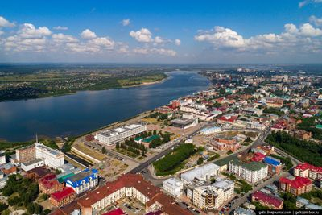
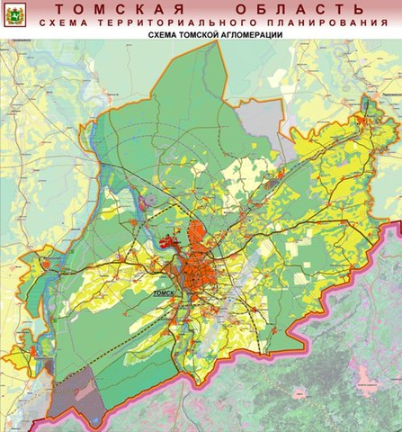

 Чаще всего под Томской агломерацией понимают её ядро, состоящее из городских округов Томск и Северск, вместе с окружающим пригородным Томским районом; её население в этих границах составляло 728 тыс. чел. (2011), а площадь — 10 818 км². При включении в состав агломерации некоторых смежных с Томским районом частей территорий Асиновского, Шегарского и Кожевниковского районов её население возрастает до 754 тыс. жит. (2009), а площадь — до 12 550 км²
 Начиная с 2002 года неоднократно руководителями области высказывалось мнение о возможности и целесообразности создания единого административно-территориального образования «Большой Томск». В апреле 2008 года власти Томска обратились к руководству области, Томского района и Северска с просьбой поддержать идею создания агломерации.